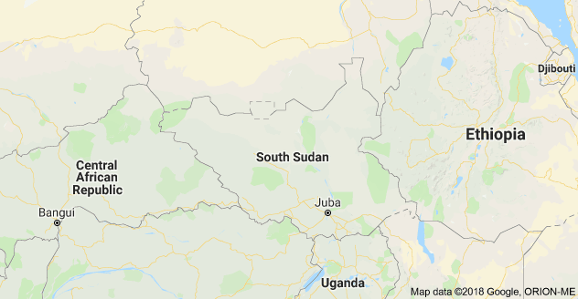
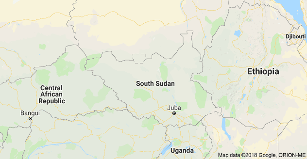

CNI BACKGROUND
Community Needs Initiative (CNI) is an NGO that was formed as a response to local problems using global developmental approaches. And has put together this expertise into development to create a niche in delivering development work in South Sudan. Our personnel are high caliber professionals in Health care, Water, Sanitation & Hygiene, Food Security & Livelihoods, and Environment Management, good governance, Enterperneurship and business processes management Our concept development is based on addressing inequalities in the communities as the root cause of poverty, building capacity of communities to become self - reliant communities in a long run. We strongly believe in the importance of adaptive & action research as the basis of intervention in health care, water, sanitation, hygiene, food security and livelihoods and environment resource management & Disaster risk reduction. CNI envisages tackling contextual community development challenges by delivering resilience building interventions through creating proactive communitiesn who analyze and derive solutions to their development challenges. The household is our basic unit of delivering development services to the community and bearing in mind cost effectiveness of the service. CNI seeks partnerships to prevent and reduce vulnerability and poverty through the development of innovative & creative programming that utilizes little resources that address more community needs through empowerment resilience building. CNI also undertakes tailored training, research, empowerment and capacity building to Local Authorities and Civil Society in supporting active citizenship in the country.
OUR HISTORY
Community Needs Initiative South Sudan is a charity, non-political, non-profit, non-religious organization created in 2012 and officially registered in 2014, with the Ministry of Legal Affairs and Relief and Rehabilitation Commission (RRC) in the Republic of South Sudan. CNISS is a member of south Sudan NGO Forum. The founders consisted of indigenous professionals with varied experiences and competencies in both humanitarian and development work. CNISS has competent team of skilled staff leading the country program. CNISS has its base at Ayii boma 72km along Juba Nimule highway where permanent organization assets consisting of about 4hectares of land acquired and 5 office buildings constructed with submersible pump water drilled.
OUR CAPACITY
We have a total of 8 professional staff with different qualifications viz; Agriculture/Livelihoods, Enterprise development/Enterpreneurship, Health (Primary health care), WASH and Good governance. We have a fully-fledged organizational compound along Nimule Juba road, with accommodation for staff, office space, one land cruiser vehicle, one Regius vehicle and other office equipment as well as a generator and a powerful solar system that runs computers.
OUR COVERAGE
CNISS has implemented projects in the greater Equatoria state mainly eastern and central covering Terekeka,Mangalla north, Nesitu,Magwi,Kit1&4,Lobonok,and Pageri. We hope to expand our presence to other states very soon or later as the humanitarian situation improves.
OUR PROJECTS
Over the years CNISS has implemented several projects ranging from Food security and livelihood, Teenage reproductive health, Increasing access to basic education, Health facility construction, Fish processing and market chain, Integrated Women empowerment, Consultative community engagement on peacebuilding among many.
OUR DONORS
Our donors include UNICEF, USAID through Internews, USAID through Global communities, Oxfam, Japanese government, German Embassy in Juba respectively.
CORE OPERATING VALUES
Caring Attitude
CNI in South Sudan will strive to demonstrate compassionate support and concern for people with vulnerabilities and their families. As a part of this caring attitude, we empower and inform beneficiaries and their families.
Responsiveness
CNI in South Sudan finds solutions that meet the needs and preferences of people with vulnerabilities and their families through direct service or referrals to other providers.
Respectfulness
CNI in South Sudan honours the choices of people with vulnerabilities, encouraging each person to take control over his/her own life, and helps to shape these based on what is important to each person. We respect the role that families play in helping to shape these choices as well.
Individualized Support
CNI knows that people's needs vary significantly and can change over time; we seek to understand the individual and re-orient the right supports for each person's development.
Diversity
CNI understands that people with vulnerabilities are part of all races, ethnicities and religions; we seek to assist as many people as our financial resource envelope can support.
CORE OPERATING VALUES continued
Integrity and Accountability
CNI has the highest level of integrity in its administrative, service, and outreach activities; we tie these activities directly to our mission, and we maintain and report our records accurately.
Innovation
CNI aims for excellent, high quality, state-of the-art approaches that communities can always count on to be there.
Partnerships
CNI will work with a wide range of partners and advocates for quality service by all partners.
Advocacy
CNI educates the public and advocates for the long term best interests of people with vulnerabilities and their families.
Financial Sustainability
CNI believes its work as an advocate and service provider will be needed for many years into the future. Therefore, we strive to achieve our mission with thoughtful strategic choices that ensure we have sufficient financial resources.